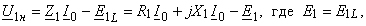
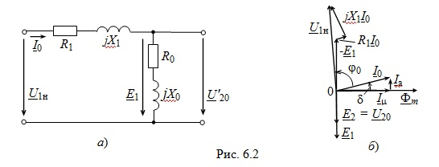
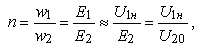
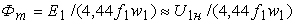

|
6.1.5. Холостой ход трансформатора Холостым ходом называют режим работы трансформатора, при котором ток I2 = 0 (вторичная обмотка разомкнута). Холостой ход (ХХ) трансформатора полностью соответствует работе катушки со сталью в цепи переменного тока. В этом случае рассматривается только первичная цепь (см. рис. 6.2а), к которой подведено номинальное первичное напряжение U1н. При этом в цепи протекает ток I0, называемый током холостого хода и равный I0 ≈ (0,02…0,08) I1н, где I1н – номинальный ток первичной обмотки, а поступающая из сети активная мощность расходуется в активных элементах R1 и R0 = Rcm (см. рис. 6.2б), т. е. в первичной обмотке и в ферромагнитном сердечнике. Для упрощения анализа процессов в трансформаторе из уравнения электрического равновесия для схемы замещения первичной цепи  
можно исключить составляющую Z1I0 = (R1 + jX1)I0, так как она мала при токе холостого хода, и считать, что U1н ≈ Е1. Это даёт возможность по данным холостого хода определить коэффициент трансформации трансформатора: (6.4) где U20 – напряжение на зажимах вторичной обмотки при ХХ трансформатора. Поскольку при ХХ трансформатора ЭДС Е1 практически равна напряжению сети, то можно считать, что величина магнитного потока  определяется напряжением U1н первичной обмотки, её числом витков w1 и частотой f1 напряжения сети. Векторная диаграмма трансформатора при ХХ (рис. 6.2б) аналогична векторной диаграмме катушки со сталью (см. рис. 5.35) с добавлением вектора Е2||Е1. |